Diseño por uso real
Dimensionamos por aforo, zonas, densidad, streaming, registro, expositores, staff, prensa, POS y criticidad.
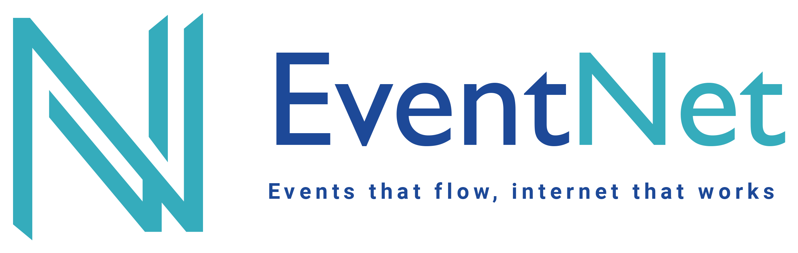
Cotizar evento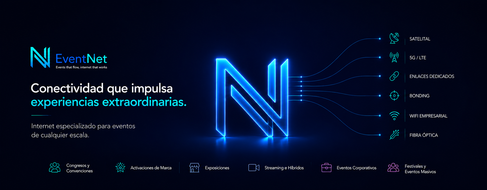
Conectividad crítica para eventos en México
Diseñamos, implementamos y monitoreamos internet dedicado, WiFi de alta densidad, bonding, fibra temporal, enlaces satelitales y redundancia para eventos en vivo.
No somos un ISP tradicional
Dimensionamos por aforo, zonas, densidad, streaming, registro, expositores, staff, prensa, POS y criticidad.
Segmentamos la red para asistentes, producción, expositores, speakers, prensa, app, pagos y transmisión.
Implementamos redundancia, failover, bonding inteligente y monitoreo durante montaje, showtime y desmontaje.
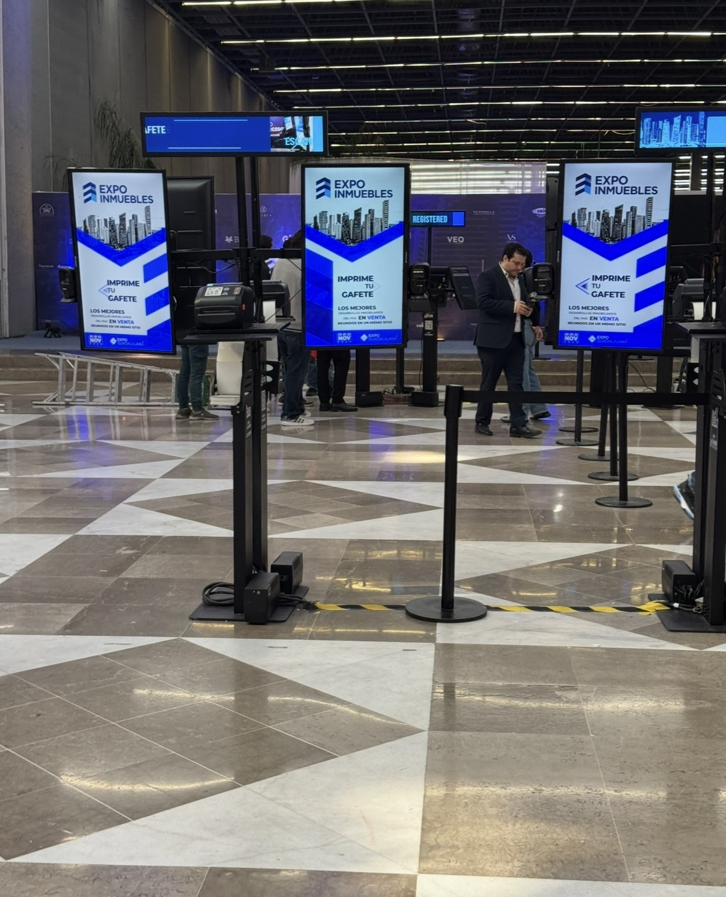
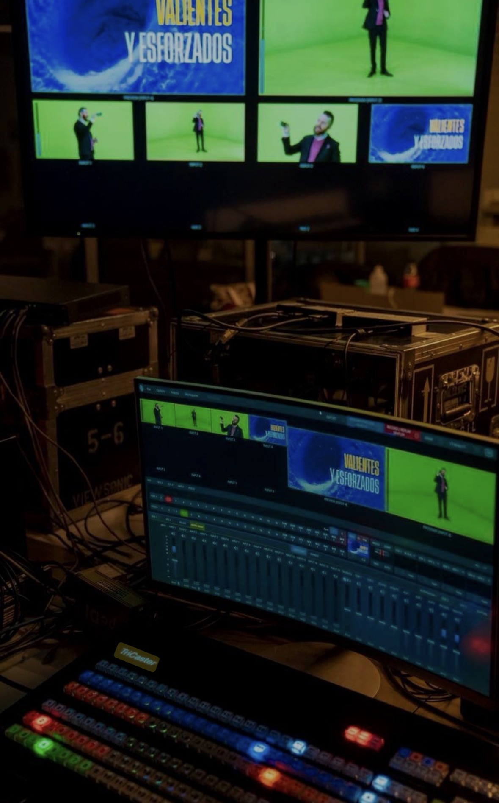
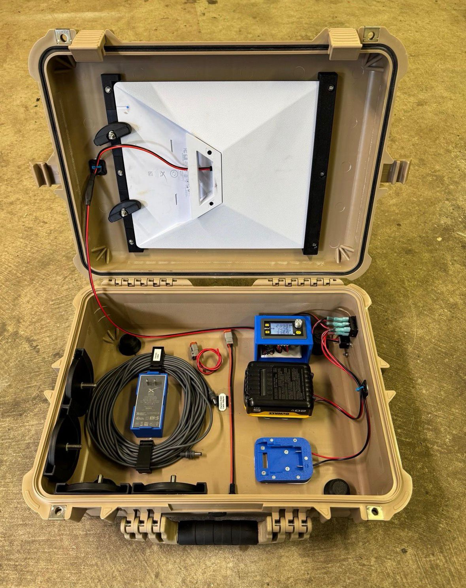
Soluciones
Cada solución está diseñada para resolver un punto de riesgo específico: experiencia del asistente, streaming, exposiciones, datos y continuidad.
EventNet Connect
Redes WiFi diseñadas por densidad, zonas, interferencia, capacidad y experiencia de uso. Ideal para congresos, convenciones, exposiciones y eventos corporativos.
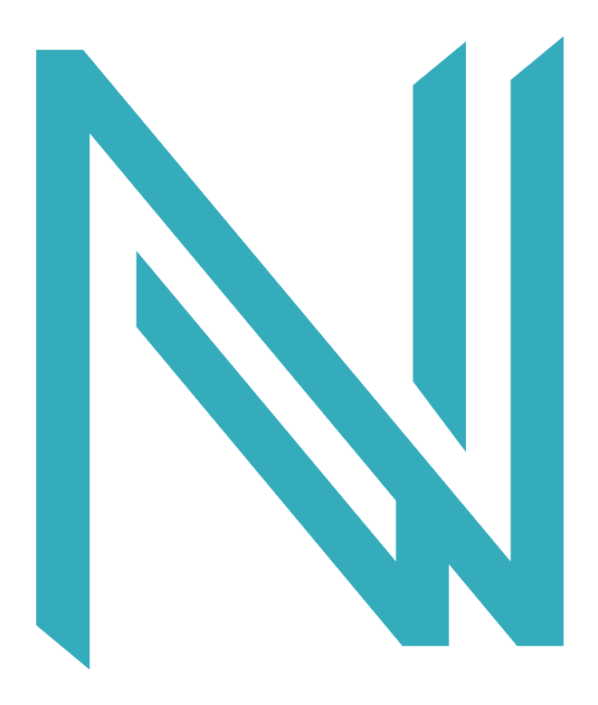
EventNet Core Arquitectura central de conectividadIndustrias
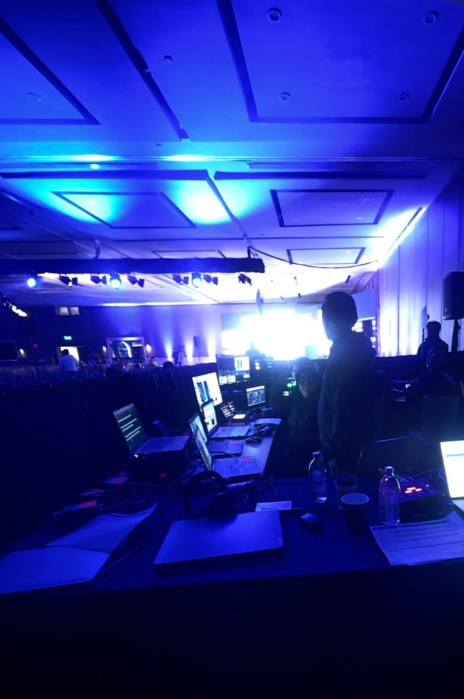
Plenarias, salas paralelas, registro, speakers, prensa, traducción remota y transmisión simultánea.
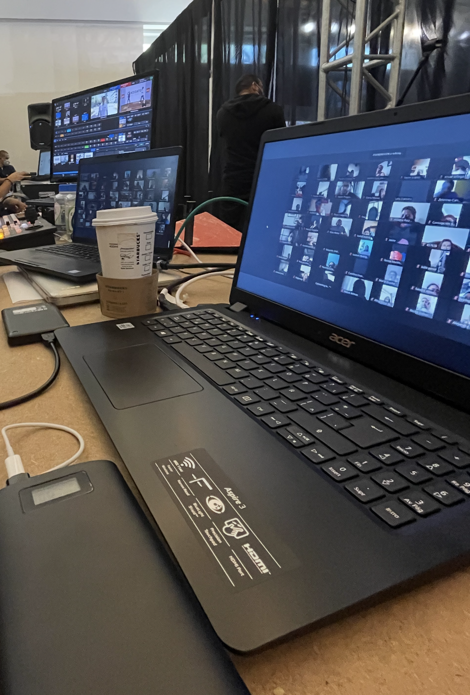
Kickoffs, convenciones de ventas, breakouts, apps, votaciones, demos, town halls y streaming.
Organizadores, expositores, stands interactivos, lead retrieval, POS, prensa y asistentes.
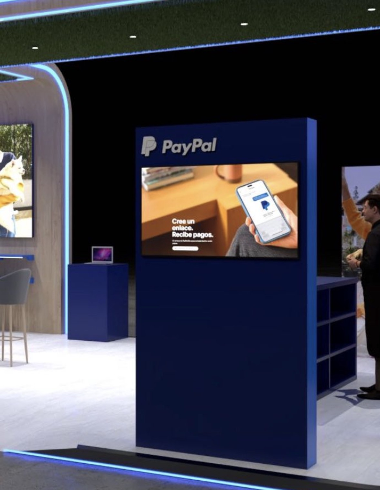
Lanzamientos, foros, activaciones internas, juntas nacionales, demos y eventos B2B.
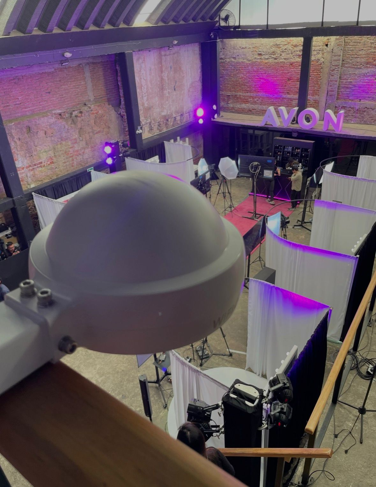
Experiencias de marca, pop-up stores, captura de datos, photo opportunities, demos e inmersivos.
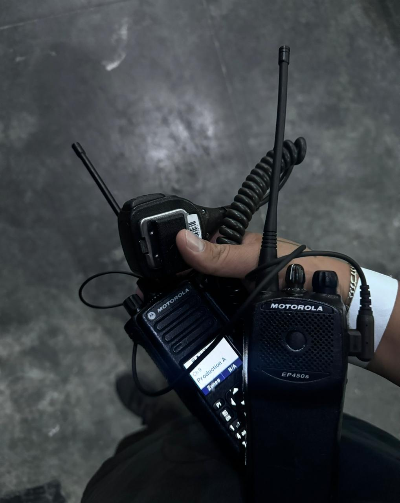
Producción, staff, puntos de venta, backstage, prensa, patrocinadores y zonas outdoor.
Upload dedicado, bonding, redundancia, monitoreo y rutas de respaldo para transmisiones en vivo.
Método EventNet
La venta no termina con instalar un enlace. La operación se mide antes, durante y después del evento.
Fecha, ciudad, venue, aforo, plano, usos críticos, zonas, proveedores y nivel de riesgo.
Diseño de enlaces, WiFi, LAN, segmentación, capacidad, redundancia, QoS y failover.
Instalación temporal, pruebas de carga, cableado, access points, enlaces y validación.
Monitoreo 24/7, soporte en sitio, alertas, respuesta rápida y cierre post-evento.
Recursos interactivos
Estos resultados son una base de planeación. EventNet ajusta la arquitectura con plano, interferencia, venue, criticidad y pruebas.
Recursos
Preguntas para venue, producción, registro, streaming, expositores y operación.
Formato con fecha, ciudad, aforo, zonas, cargas críticas y necesidades de redundancia.
Cómo separar redes para organizador, stands, asistentes, staff y sistemas comerciales.
Evalúa si la red existente puede soportar streaming, check-in, pagos y alta densidad.
Centro de autoridad
Respuestas claras para dimensionar redes, evaluar venues, proteger transmisiones y tomar mejores decisiones técnicas antes del montaje.
Dimensionamiento para asistentes, staff, registro, streaming, expositores y puntos de venta.
Criterios para comparar propuestas, SLA, redundancia, operación y soporte en sitio.
Capacidad, interferencia, access points, zonas críticas y experiencia del asistente.
Lo que una transmisión necesita para mantenerse estable durante showtime.
Checklist para evitar sorpresas con redes compartidas, límites, cableado y cobertura.
Cómo separar tráfico crítico y dar conectividad confiable a expositores y sistemas.
Casos de éxito
Congreso médico
Red dedicada para transmisión, speakers, prensa, registro y staff, con failover activo durante todo el evento.
Expo B2B
Segmentación para expositores, lead retrieval, POS, asistentes y operación del organizador.
Activación de marca
Internet temporal, portal de acceso, datos de interacción y soporte en sitio para demos de alto tráfico.
Cobertura estratégica
Internet para eventos, WiFi para eventos, internet dedicado para streaming, internet para congresos, internet para exposiciones, fibra óptica temporal, enlaces satelitales y failover.
Cotización
Te ayudamos a dimensionar la red correcta con base en fecha, ciudad, venue, aforo, zonas, streaming, expositores, staff y nivel de redundancia.